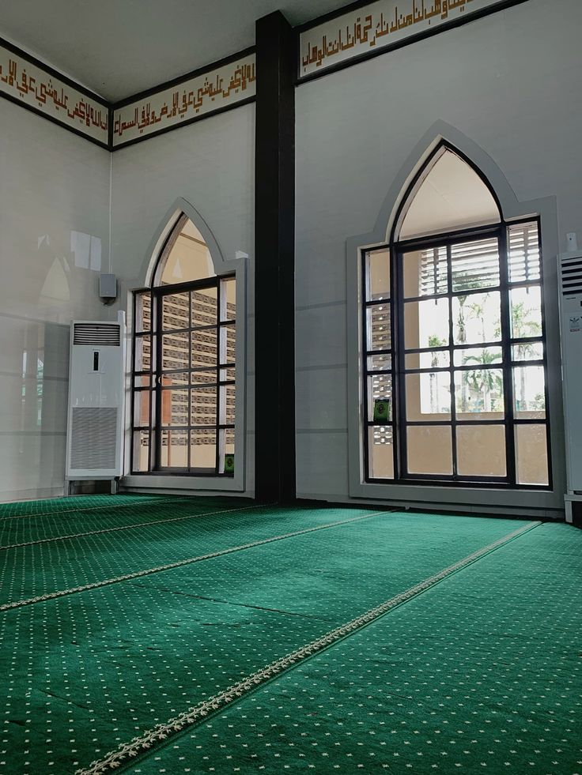
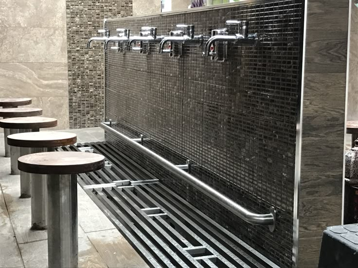
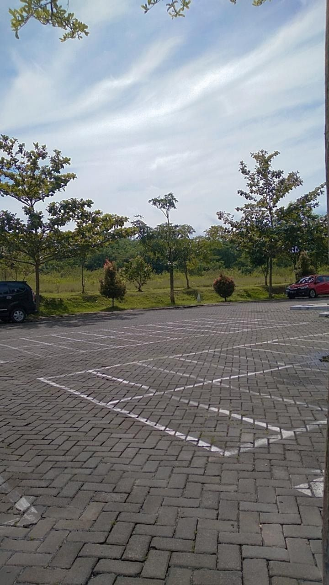

Jadwal Sholat Harian · Kemenag
Panduan presisi arah kiblat untuk Masjid Jami' Baitusy Syukur Salatiga dan sekitarnya
Blotongan, Kec. Sidorejo, Kota Salatiga (7.308° S, 110.476° E)
Jl. Lingkar Salatiga, Blotongan, Kec. Sidorejo, Kota Salatiga, Jawa Tengah


